Experience
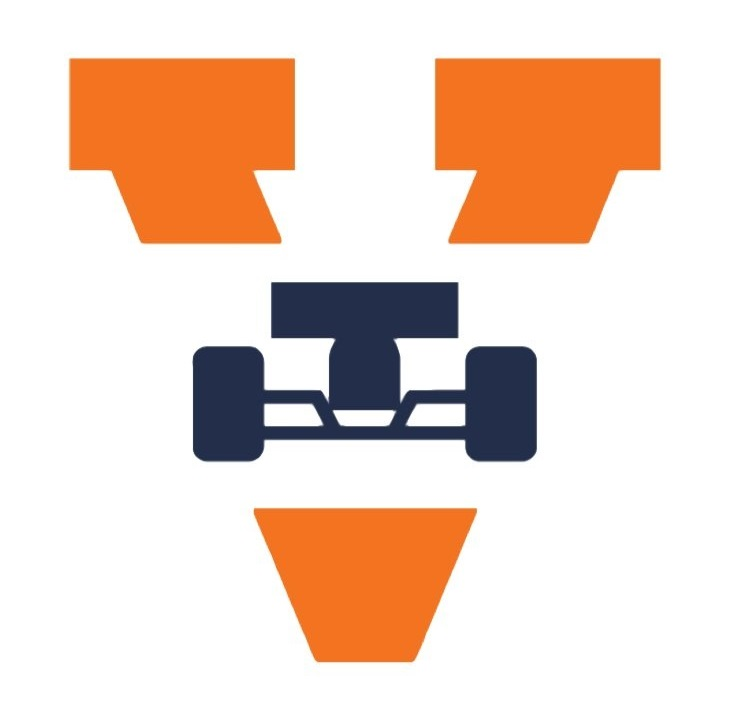
Cavalier Autonomous Racing
March 2024 - PresentMotion Planning Lead
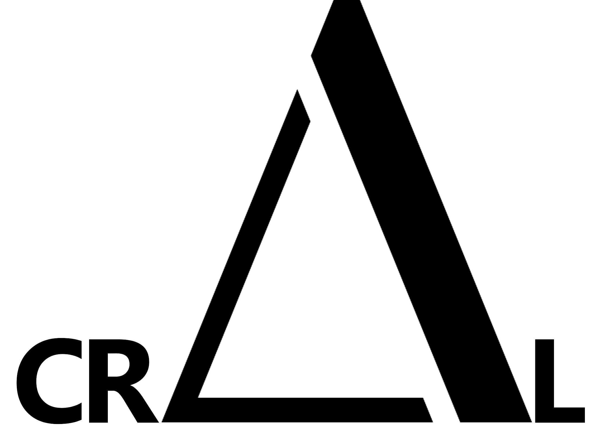
Chandra Robot Autonomy Lab
November 2024 - PresentRobotics Researcher
Honda Aircraft Company
May 2025 - August 2025Software Engineering Intern
- Developed High-Speed Data Bus handling framework in C++ to parse live packet streams and PCAP files into structured, meaningful data.
- Overhauled GUI to control Power Distribution Units by creating a desktop app with fail-safe UDP socket handling and per-outlet management, reducing daily power on/off procedure by 90 seconds.
- Refactored C++ networking and inter-process communication logic for Simulink/dSPACE integration in a real-time simulation system (RTSS), cutting code size by 72% and improving maintainability.

HondaJet Elite II
University of Virginia
August 2023 - December 2024Teaching Assistant - Computer Systems and Organization
Icarus Medical Innovations
January 2024 - July 2024Software Development Intern
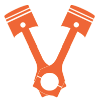
VA Motorsports
August 2022 - May 2024Battery Management System Co-Lead - Software Team
About Me
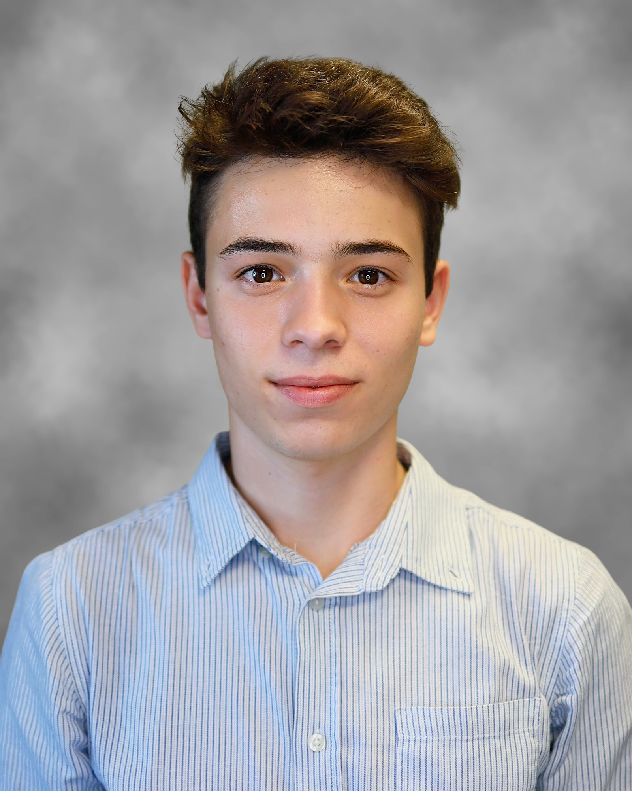
I'm a computer science student at the University of Virginia with a 4.0 GPA and have an interest for autonomy in robotics. I'm originally from Italy (with both English and Italian as first languages), and I've lived in the Czech Republic, Belgium, Romania, Switzerland, and the US (both in Iowa and Virginia). Beyond my passion for robotics and traveling, I love practicing sports like running, skiing, and soccer, and spending time with my family.
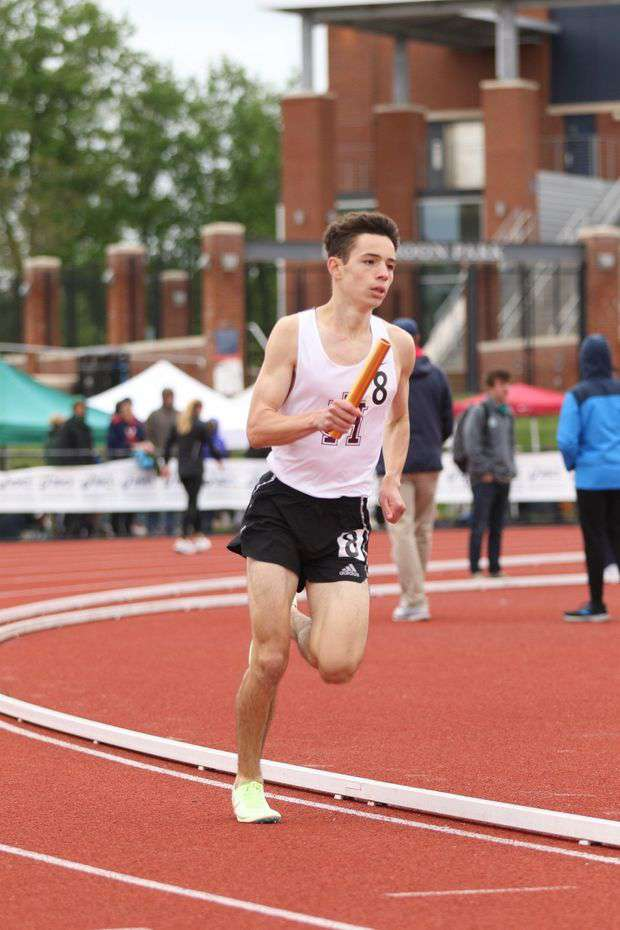
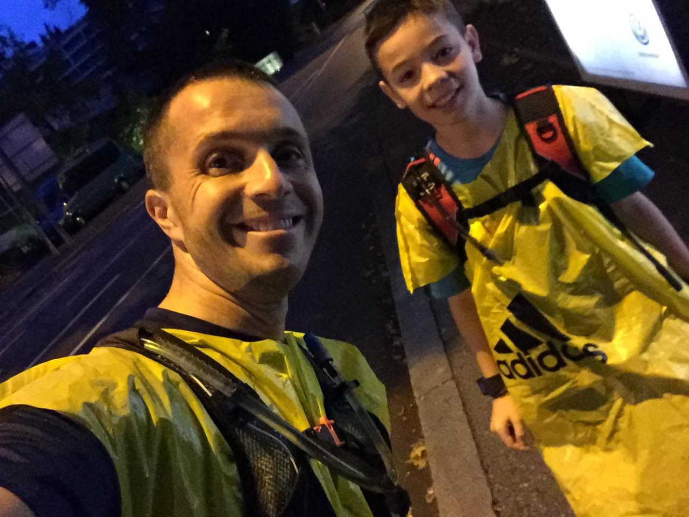
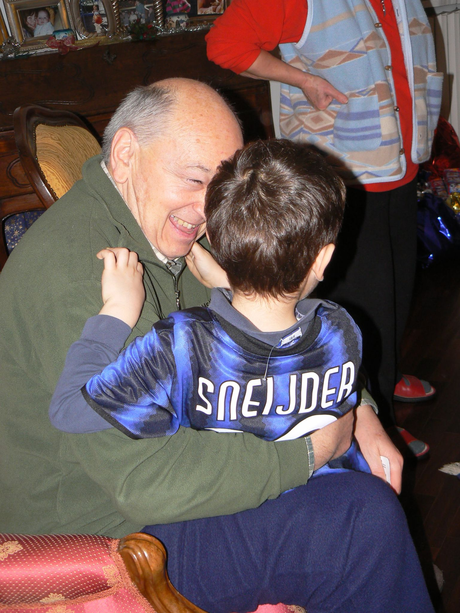
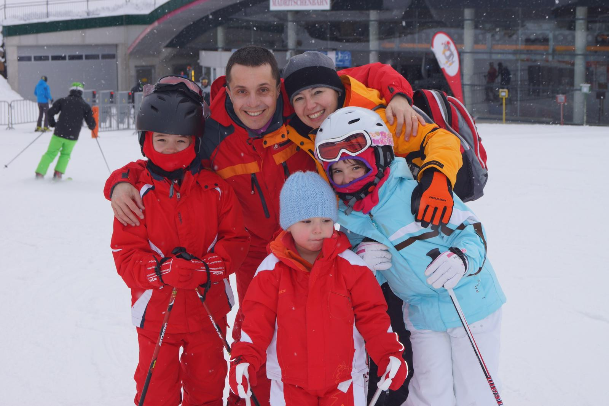
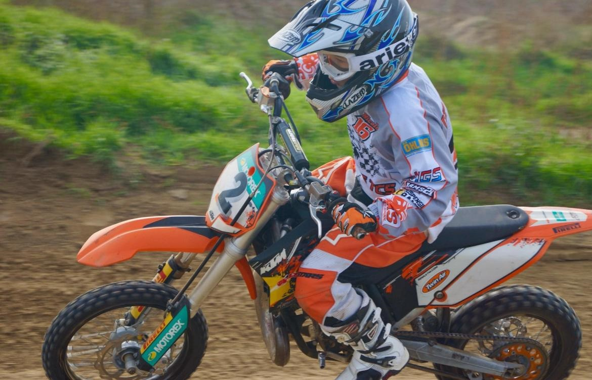
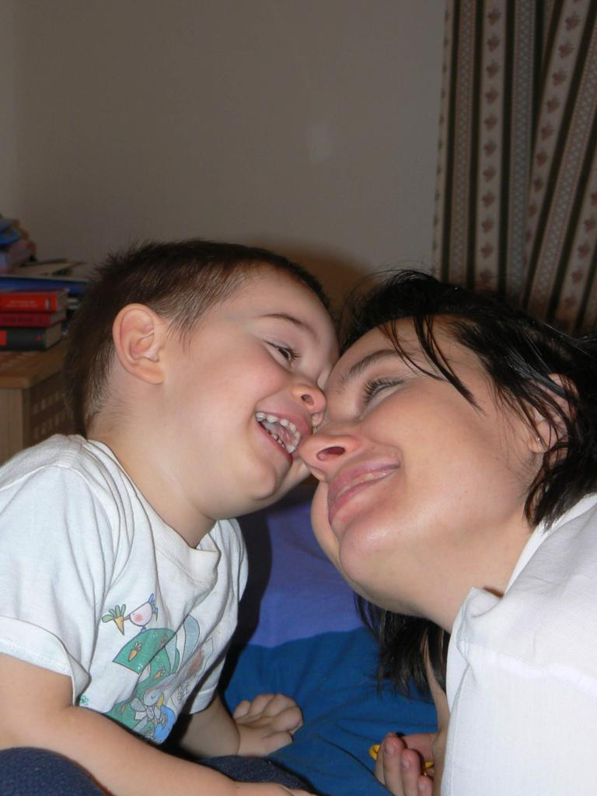
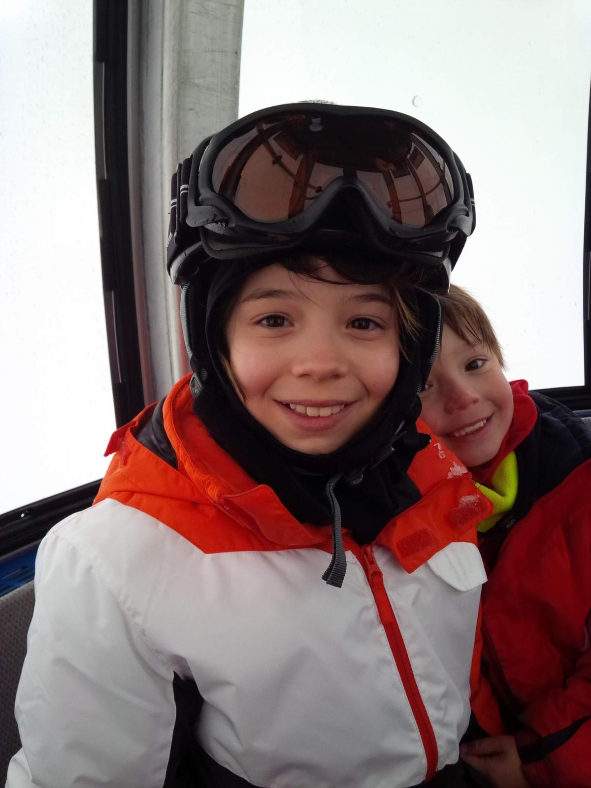